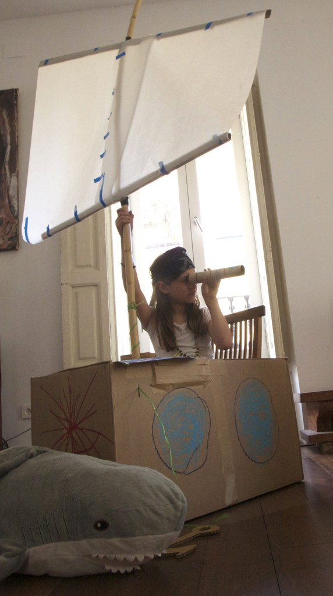

Inicio›Blog›Material›Caja 02Material · Cartón · Barco · Actividad · ConstruirCaja 0226 junio, 2012 Unos barcos faciles.  Hannah como pirata. Hannah las Piratin. ← LaberintoCaja 01 →
 Unos barcos faciles.
Unos barcos faciles. Unos barcos faciles.
Unos barcos faciles.